Candidate List 20260325 Previous Day Next Day Section 1: New Sources (age<1d) Cosmological Afterglow
Section 2: Old (1-5d) sources observed last night placeholder
Section 1: New Afterglow/FBOT Cands Last Night (3)
1. ZTF25abznunj (Afterglow?FBOT?) [Back to Top] [Share] [Trigger Swift] [Fritz ] [Lasair ]RA, Dec: 206.10823, 24.31822 13h44m25.98s, 24d19m5.58sGalactic (l, b): 22.62883, 77.74474 ext(g-r) = 0.015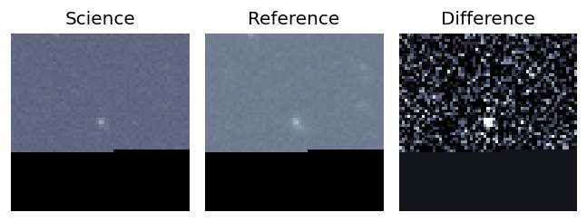
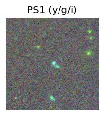
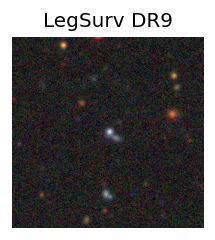
LegacySurvey: 1 sources in 3 arcsec Closest: d = 0.64 arcsec, 274.8 deg (east of north) photoz=0.7 (68% bounds 0.57, 0.89), type=PSF peak abs mag = -22.86 (68% bounds -22.3, -23.48) 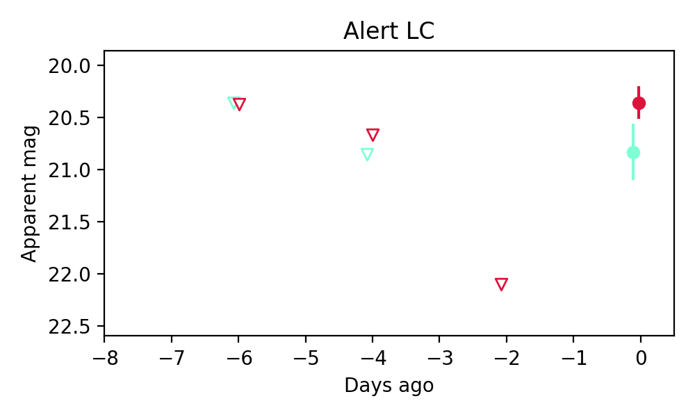
Consistent with synchrotron, g-r>0!
2. ZTF26aapqmlq (Afterglow?) [Back to Top] [Share] [Trigger Swift] [Fritz ] [Lasair ]RA, Dec: 169.67883, 3.87336 11h18m42.92s, 3d52m24.09sGalactic (l, b): 255.29055, 57.89456 WARNING: -0.52 deg from ecliptic plane ext(g-r) = 0.053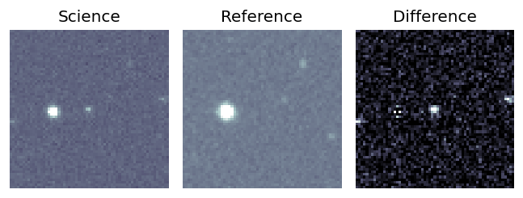
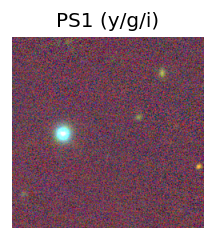
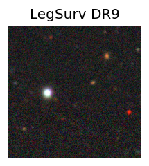
LegacySurvey: 1 sources in 3 arcsec Closest: d = 7.47 arcsec, 180.6 deg (east of north) photoz=0.86 (68% bounds 0.67, 1.05), type=PSF peak abs mag = -24.64 (68% bounds -24.0, -25.17) 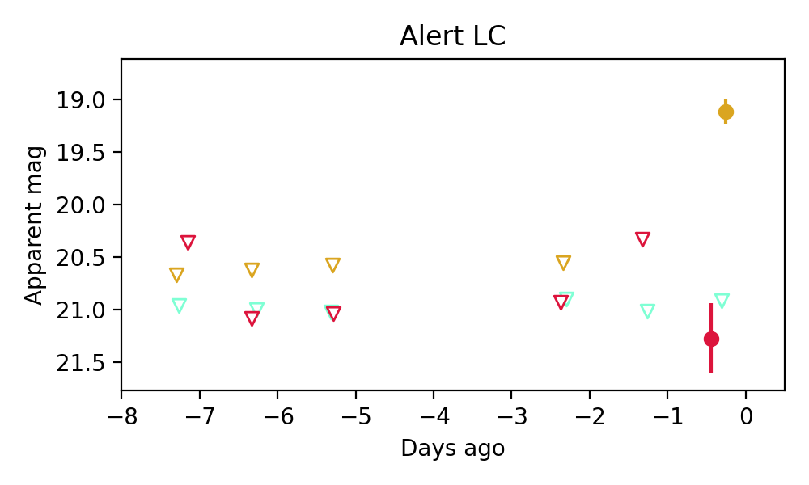
Consistent with synchrotron, g-r>0!
3. ZTF26aaptqrp (Afterglow?) [Back to Top] [Share] [Trigger Swift] [Fritz ] [Lasair ]RA, Dec: 196.52977, 39.42423 13h 6m7.15s, 39d25m27.24sGalactic (l, b): 109.90231, 77.33024 ext(g-r) = 0.017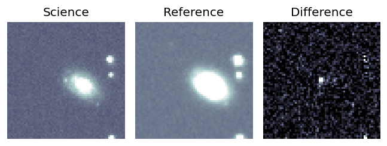
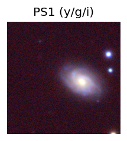
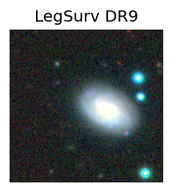
peak abs mag = -15.37 LegacySurvey: 1 sources in 3 arcsec Closest: d = 9.66 arcsec, 256.4 deg (east of north) photoz=0.03 (68% bounds 0.03, 0.04), type=EXP peak abs mag = -15.6 (68% bounds -15.31, -15.95) 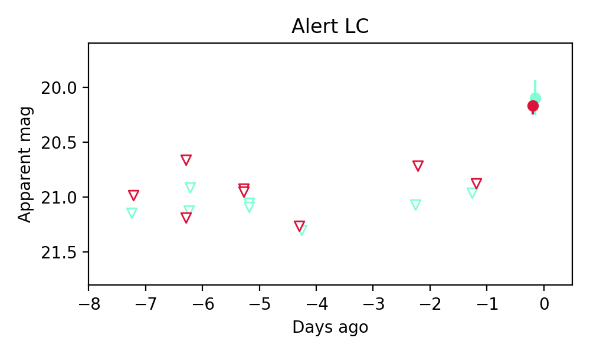
Consistent with synchrotron, g-r>0!
Section 2: Older Sources Observed Last Night (28)
0. ZTF26aamwjro (Afterglow?) [Back to Top] [Share] [Trigger Swift] [Fritz ] [Lasair ]RA, Dec: 212.97145, 27.49532 14h11m53.15s, 27d29m43.14sGalactic (l, b): 38.74832, 72.14584 ext(g-r) = 0.018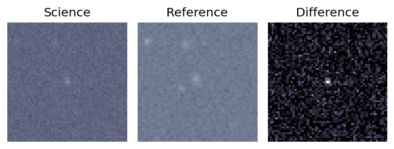
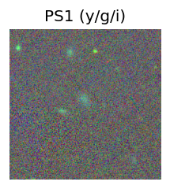
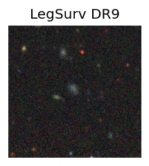
peak abs mag = -19.22 LegacySurvey: 1 sources in 3 arcsec Closest: d = 1.50 arcsec, 182.5 deg (east of north) photoz=0.99 (68% bounds 0.71, 1.28), type=REX peak abs mag = -24.32 (68% bounds -23.42, -25.0) 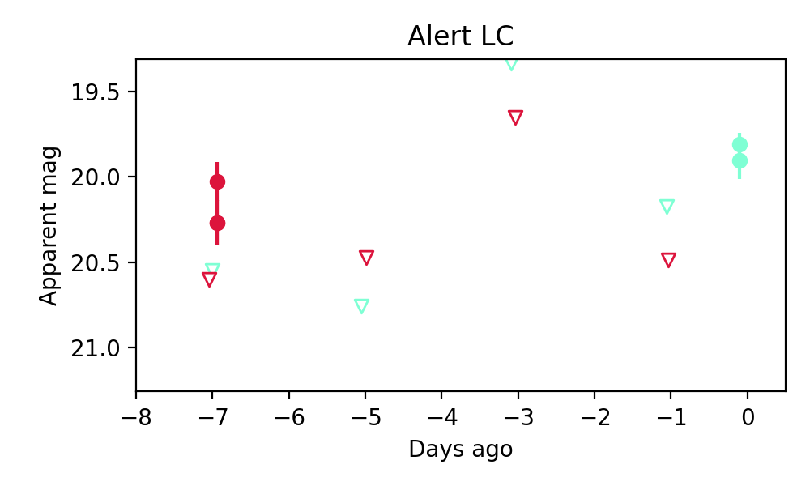
1. ZTF26aannuvu (Afterglow?) [Back to Top] [Share] [Trigger Swift] [Fritz ] [Lasair ]RA, Dec: 141.44347, 2.22966 9h25m46.43s, 2d13m46.77sGalactic (l, b): 230.64906, 34.91572 ext(g-r) = 0.058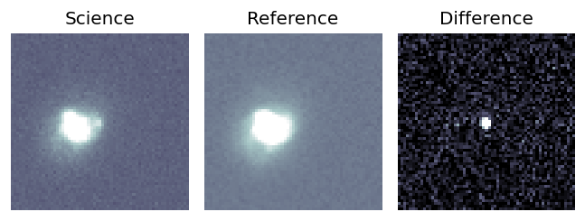
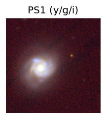
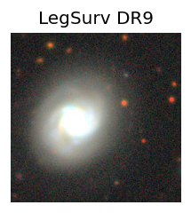
peak abs mag = -17.45 LegacySurvey: 1 sources in 3 arcsec Closest: d = 8.40 arcsec, 105.1 deg (east of north) photoz=0.03 (68% bounds 0.02, 0.04), type=SER peak abs mag = -18.13 (68% bounds -17.75, -18.91) 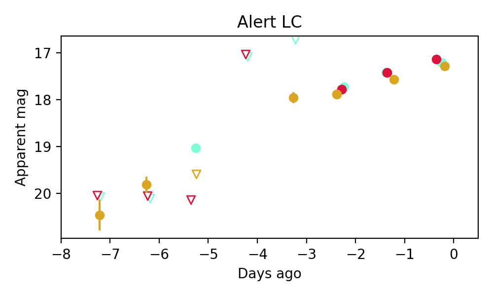
Consistent with synchrotron, g-r>0!
2. ZTF26aanrcbg (FBOT?) [Back to Top] [Share] [Trigger Swift] [Fritz ] [Lasair ]RA, Dec: 189.95274, 8.34121 12h39m48.66s, 8d20m28.37sGalactic (l, b): 294.06101, 71.01243 ext(g-r) = 0.027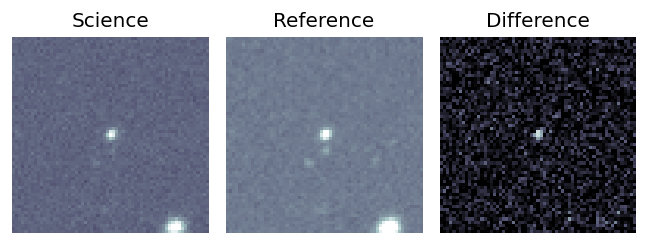
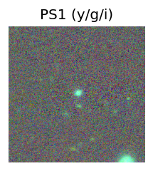
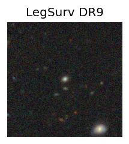
peak abs mag = -19.92 LegacySurvey: 1 sources in 3 arcsec Closest: d = 0.18 arcsec, 285.0 deg (east of north) photoz=0.13 (68% bounds 0.11, 0.16), type=SER peak abs mag = -19.17 (68% bounds -18.8, -19.59) 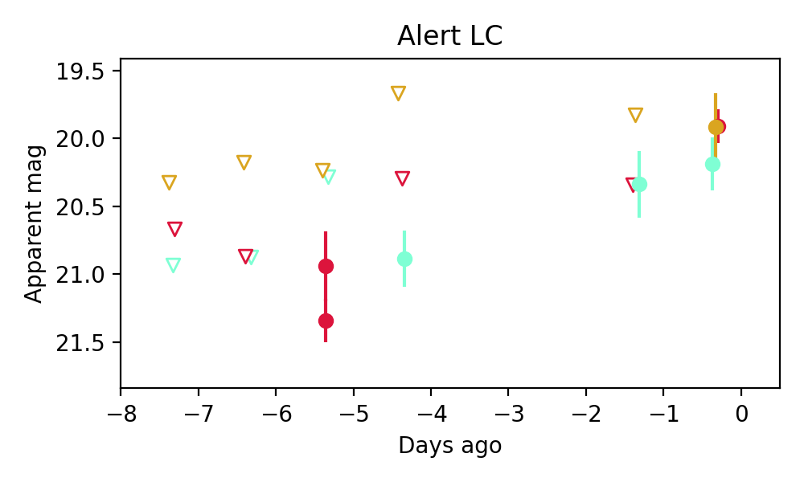
Consistent with synchrotron, g-r>0!
3. ZTF26aansvve (Afterglow?) [Back to Top] [Share] [Trigger Swift] [Fritz ] [Lasair ]RA, Dec: 203.20408, -3.03134 13h32m48.98s, -3d-1m-52.84sGalactic (l, b): 322.84483, 58.23161 ext(g-r) = 0.046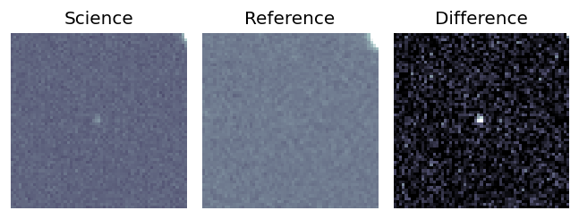
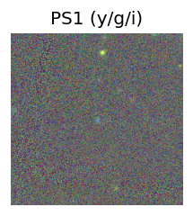
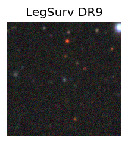
peak abs mag = -22.19 LegacySurvey: 1 sources in 3 arcsec Closest: d = 0.77 arcsec, 188.8 deg (east of north) photoz=0.29 (68% bounds 0.18, 0.53), type=EXP peak abs mag = -21.15 (68% bounds -20.01, -22.71) 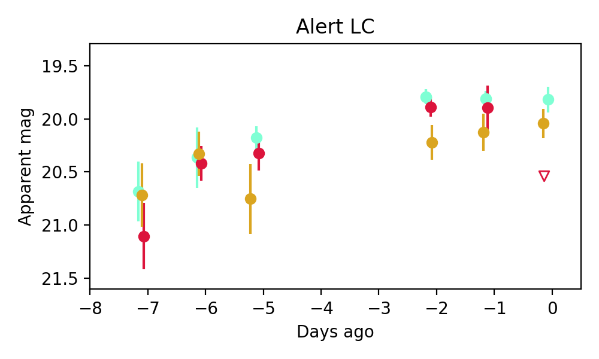
4. ZTF26aansxjk (FBOT?) [Back to Top] [Share] [Trigger Swift] [Fritz ] [Lasair ]RA, Dec: 182.7643, 42.04388 12h11m3.43s, 42d 2m37.96sGalactic (l, b): 149.29626, 72.9547 ext(g-r) = 0.015peak abs mag = -20.54 LegacySurvey: 1 sources in 3 arcsec Closest: d = 0.63 arcsec, 273.1 deg (east of north) photoz=0.17 (68% bounds 0.1, 0.29), type=EXP peak abs mag = -20.63 (68% bounds -19.24, -21.88)
5. ZTF26aantdgv (Afterglow?) [Back to Top] [Share] [Trigger Swift] [Fritz ] [Lasair ]RA, Dec: 261.26136, 69.72647 17h25m2.73s, 69d43m35.29sGalactic (l, b): 100.40317, 32.76871 ext(g-r) = 0.045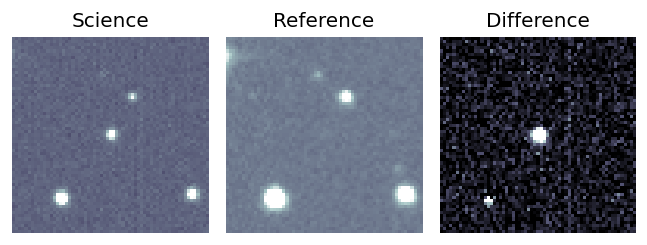
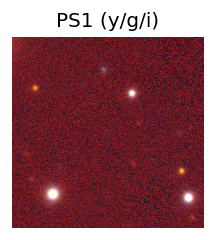
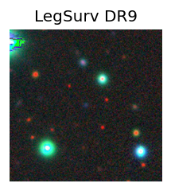
LegacySurvey: 1 sources in 3 arcsec Closest: d = 0.05 arcsec, 40.7 deg (east of north) photoz=0.07 (68% bounds 0.01, 0.67), type=PSF peak abs mag = -19.83 (68% bounds -15.63, -25.25) 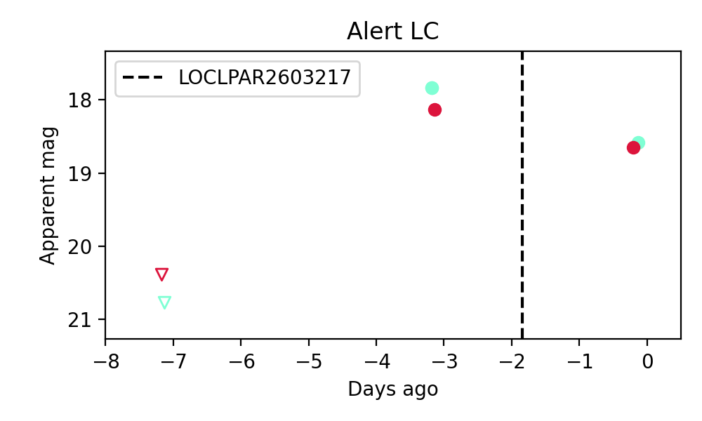
6. ZTF26aantfra (FBOT?) [Back to Top] [Share] [Trigger Swift] [Fritz ] [Lasair ]RA, Dec: 247.47929, 17.23412 16h29m55.03s, 17d14m2.83sGalactic (l, b): 33.77964, 38.84854 ext(g-r) = 0.066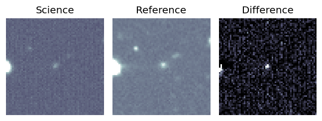
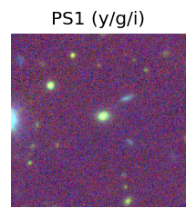
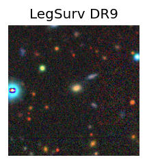
peak abs mag = -19.68 LegacySurvey: 1 sources in 3 arcsec Closest: d = 1.80 arcsec, 307.5 deg (east of north) photoz=0.16 (68% bounds 0.12, 0.21), type=SER peak abs mag = -19.44 (68% bounds -18.74, -20.07) 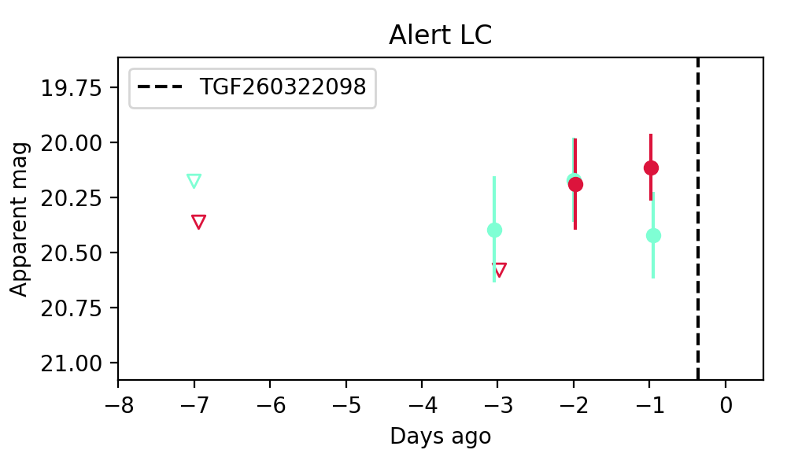
Consistent with synchrotron, g-r>0!
7. ZTF26aanudir (FBOT?) [Back to Top] [Share] [Trigger Swift] [Fritz ] [Lasair ]RA, Dec: 301.35053, -11.22325 20h 5m24.13s, -11d-13m-23.71sGalactic (l, b): 31.00062, -21.44555 ext(g-r) = 0.148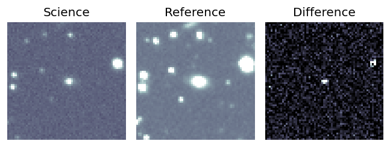
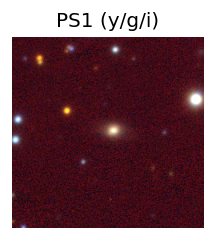
peak abs mag = -19.00 PS1: 1 source in 3 arcsec Closest: d = 1.43 arcsec photoz=0.08+/-0.00 peak abs mag = -19.61 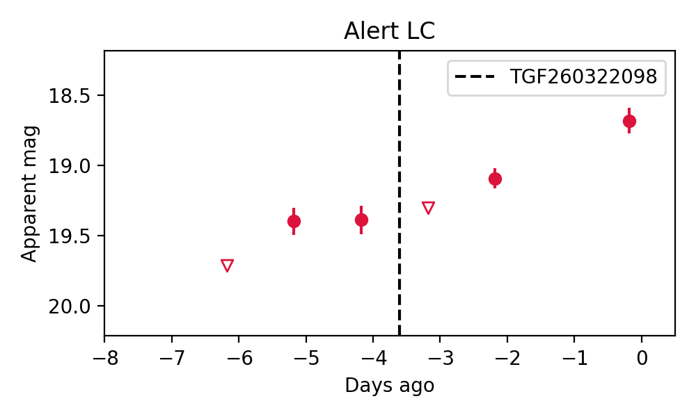
8. ZTF26aanuegj (Afterglow?) [Back to Top] [Share] [Trigger Swift] [Fritz ] [Lasair ]RA, Dec: 291.23902, -4.66854 19h24m57.36s, -4d-40m-6.73sGalactic (l, b): 32.57124, -9.57744 ext(g-r) = 0.617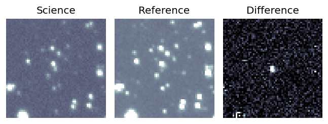
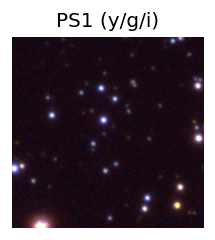
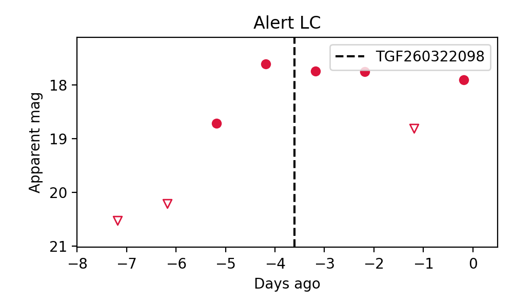
9. ZTF26aaodgsa (Afterglow?FBOT?) [Back to Top] [Share] [Trigger Swift] [Fritz ] [Lasair ]RA, Dec: 172.04538, 25.6567 11h28m10.89s, 25d39m24.12sGalactic (l, b): 212.72735, 71.31866 ext(g-r) = 0.023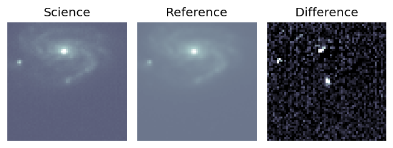
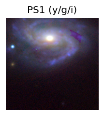
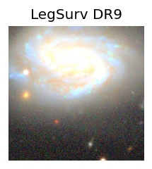
LegacySurvey: 1 sources in 3 arcsec Closest: d = 0.81 arcsec, 310.8 deg (east of north) photoz=0.07 (68% bounds 0.03, 0.08), type=REX peak abs mag = -20.04 (68% bounds -18.58, -20.37) 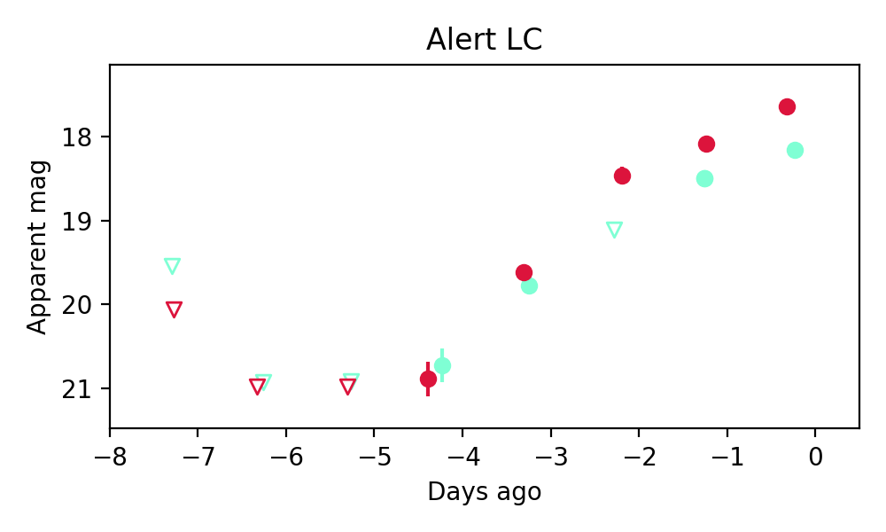
Consistent with synchrotron, g-r>0!
10. ZTF26aaofvtl (Afterglow?) [Back to Top] [Share] [Trigger Swift] [Fritz ] [Lasair ]RA, Dec: 170.36333, 3.44352 11h21m27.20s, 3d26m36.68sGalactic (l, b): 256.79518, 58.01303 WARNING: -0.65 deg from ecliptic plane ext(g-r) = 0.056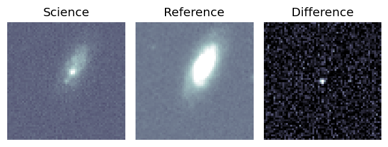
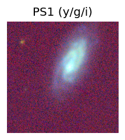
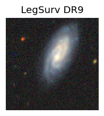
LegacySurvey: 1 sources in 3 arcsec Closest: d = 6.12 arcsec, 324.8 deg (east of north) photoz=0.04 (68% bounds 0.02, 0.05), type=PSF peak abs mag = -17.01 (68% bounds -16.0, -17.94) 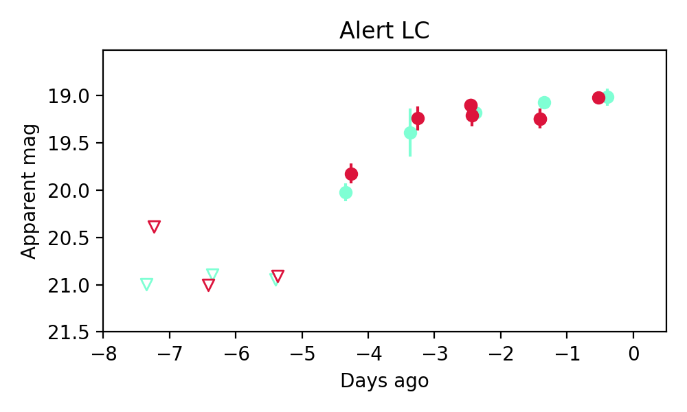
Consistent with synchrotron, g-r>0!
11. ZTF26aaohbqp (Afterglow?) [Back to Top] [Share] [Trigger Swift] [Fritz ] [Lasair ]RA, Dec: 261.65676, -13.27637 17h26m37.62s, -13d-16m-34.92sGalactic (l, b): 11.02521, 12.03811 ext(g-r) = 0.617PS1: 1 source in 3 arcsec Closest: d = 6.56 arcsec photoz=0.66+/-0.35 peak abs mag = -25.73
12. ZTF26aaovlst (Afterglow?FBOT?) [Back to Top] [Share] [Trigger Swift] [Fritz ] [Lasair ]RA, Dec: 186.60897, 8.3937 12h26m26.15s, 8d23m37.31sGalactic (l, b): 284.24769, 70.35314 ext(g-r) = 0.023peak abs mag = -22.78 LegacySurvey: 1 sources in 3 arcsec Closest: d = 0.12 arcsec, 167.5 deg (east of north) photoz=0.08 (68% bounds 0.03, 0.19), type=DEV peak abs mag = -17.86 (68% bounds -15.67, -20.0) Consistent with synchrotron, g-r>0!
13. ZTF26aaovyba (FBOT?) [Back to Top] [Share] [Trigger Swift] [Fritz ] [Lasair ]RA, Dec: 207.54594, 12.48985 13h50m11.02s, 12d29m23.45sGalactic (l, b): 349.03558, 69.90933 ext(g-r) = 0.031peak abs mag = -19.76 LegacySurvey: 1 sources in 3 arcsec Closest: d = 0.99 arcsec, 123.2 deg (east of north) photoz=0.08 (68% bounds 0.07, 0.1), type=SER peak abs mag = -18.98 (68% bounds -18.52, -19.4) Consistent with synchrotron, g-r>0!
14. ZTF26aapgqen (Afterglow?FBOT?) [Back to Top] [Share] [Trigger Swift] [Fritz ] [Lasair ]RA, Dec: 198.96231, 19.72382 13h15m50.96s, 19d43m25.74sGalactic (l, b): 341.29321, 80.72043 ext(g-r) = 0.022peak abs mag = -17.64 LegacySurvey: 1 sources in 3 arcsec Closest: d = 1.34 arcsec, 281.5 deg (east of north) photoz=0.34 (68% bounds 0.07, 1.21), type=PSF peak abs mag = -21.89 (68% bounds -18.0, -25.23) Consistent with synchrotron, g-r>0!
15. ZTF26aapljhq (Afterglow?FBOT?) [Back to Top] [Share] [Trigger Swift] [Fritz ] [Lasair ]RA, Dec: 57.54321, 20.08997 3h50m10.37s, 20d 5m23.90sGalactic (l, b): 170.19545, -25.95407 WARNING: -0.0 deg from ecliptic plane ext(g-r) = 0.365PS1: 1 source in 3 arcsec Closest: d = 1.88 arcsec photoz=0.24+/-0.03 peak abs mag = -21.59
16. ZTF26aaplqrg (Afterglow?) [Back to Top] [Share] [Trigger Swift] [Fritz ] [Lasair ]RA, Dec: 114.64821, 4.1525 7h38m35.57s, 4d 9m9.02sGalactic (l, b): 214.60215, 12.3785 ext(g-r) = 0.079
17. ZTF26aaplqvy (Afterglow?) [Back to Top] [Share] [Trigger Swift] [Fritz ] [Lasair ]RA, Dec: 113.93146, 9.61115 7h35m43.55s, 9d36m40.16sGalactic (l, b): 209.25071, 14.16101 ext(g-r) = 0.041PS1: 1 source in 3 arcsec Closest: d = 0.30 arcsec photoz=0.10+/-0.01 peak abs mag = -18.70 Consistent with synchrotron, g-r>0!
18. ZTF26aaplwgi (Afterglow?) [Back to Top] [Share] [Trigger Swift] [Fritz ] [Lasair ]RA, Dec: 112.31424, 74.0027 7h29m15.42s, 74d 0m9.70sGalactic (l, b): 140.96788, 28.59508 ext(g-r) = 0.026
19. ZTF26aaplzxi (FBOT?) [Back to Top] [Share] [Trigger Swift] [Fritz ] [Lasair ]RA, Dec: 101.2201, 52.86583 6h44m52.82s, 52d51m56.98sGalactic (l, b): 163.00078, 20.37424 ext(g-r) = 0.081LegacySurvey: 1 sources in 3 arcsec Closest: d = 1.17 arcsec, 278.9 deg (east of north) photoz=0.37 (68% bounds 0.29, 0.47), type=REX peak abs mag = -21.43 (68% bounds -20.8, -22.06)
20. ZTF26aapmcmu (Afterglow?) [Back to Top] [Share] [Trigger Swift] [Fritz ] [Lasair ]RA, Dec: 128.05753, 9.2679 8h32m13.81s, 9d16m4.45sGalactic (l, b): 216.02566, 26.57709 ext(g-r) = 0.073
21. ZTF26aapmsfa (Afterglow?) [Back to Top] [Share] [Trigger Swift] [Fritz ] [Lasair ]RA, Dec: 157.09971, 32.46314 10h28m23.93s, 32d27m47.30sGalactic (l, b): 194.3766, 58.6606 ext(g-r) = 0.019
22. ZTF26aaposiz (Afterglow?FBOT?) [Back to Top] [Share] [Trigger Swift] [Fritz ] [Lasair ]RA, Dec: 168.07912, -10.09764 11h12m18.99s, -10d-5m-51.50sGalactic (l, b): 266.72273, 45.6905 ext(g-r) = 0.056PS1: 1 source in 3 arcsec Closest: d = 0.78 arcsec photoz=0.19+/-0.07 peak abs mag = -19.97 Consistent with synchrotron, g-r>0!
23. ZTF26aapozll (Afterglow?) [Back to Top] [Share] [Trigger Swift] [Fritz ] [Lasair ]RA, Dec: 179.38175, -2.79849 11h57m31.62s, -2d-47m-54.56sGalactic (l, b): 277.354, 57.37141 WARNING: -2.81 deg from ecliptic plane ext(g-r) = 0.022peak abs mag = -17.65 LegacySurvey: 1 sources in 3 arcsec Closest: d = 0.66 arcsec, 285.2 deg (east of north) photoz=0.11 (68% bounds 0.1, 0.13), type=SER peak abs mag = -18.38 (68% bounds -18.11, -18.65) Consistent with synchrotron, g-r>0!
24. ZTF26aappgtv (Afterglow?) [Back to Top] [Share] [Trigger Swift] [Fritz ] [Lasair ]RA, Dec: 170.95468, 37.08816 11h23m49.12s, 37d 5m17.36sGalactic (l, b): 179.13258, 69.01498 ext(g-r) = 0.026 Consistent with synchrotron, g-r>0!
25. ZTF26aappgzc (Afterglow?) [Back to Top] [Share] [Trigger Swift] [Fritz ] [Lasair ]RA, Dec: 165.72679, 51.48806 11h 2m54.43s, 51d29m17.02sGalactic (l, b): 155.55104, 58.21033 ext(g-r) = 0.012peak abs mag = -18.13 LegacySurvey: 1 sources in 3 arcsec Closest: d = 1.13 arcsec, 259.9 deg (east of north) photoz=0.09 (68% bounds 0.06, 0.12), type=EXP peak abs mag = -18.49 (68% bounds -17.7, -19.23) Consistent with synchrotron, g-r>0!
26. ZTF26aappzxg (FBOT?) [Back to Top] [Share] [Trigger Swift] [Fritz ] [Lasair ]RA, Dec: 141.84592, 11.2375 9h27m23.02s, 11d14m14.99sGalactic (l, b): 220.99022, 39.64652 WARNING: -3.57 deg from ecliptic plane ext(g-r) = 0.031peak abs mag = -21.13 LegacySurvey: 1 sources in 3 arcsec Closest: d = 1.72 arcsec, 249.8 deg (east of north) photoz=0.16 (68% bounds 0.15, 0.17), type=SER peak abs mag = -21.16 (68% bounds -21.03, -21.29)
27. ZTF26aaptywo (FBOT?) [Back to Top] [Share] [Trigger Swift] [Fritz ] [Lasair ]RA, Dec: 262.38074, 45.21298 17h29m31.38s, 45d12m46.73sGalactic (l, b): 71.12846, 32.88661 ext(g-r) = 0.03peak abs mag = -20.98 LegacySurvey: 1 sources in 3 arcsec Closest: d = 1.27 arcsec, 115.7 deg (east of north) photoz=0.48 (68% bounds 0.39, 0.59), type=REX peak abs mag = -21.88 (68% bounds -21.38, -22.45)